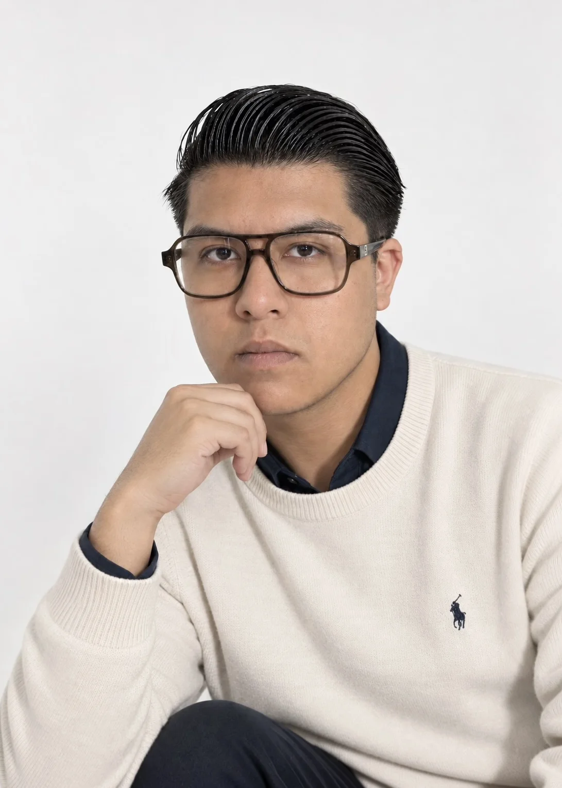

Edgar
Jozef.

No diseñamos eventos. Diseñamos la emoción que las personas recordarán cuando todo termine.
Lic. en Diseño, Animación y Arte Digital · Negocios y Mercadotecnia
Diseño con una mirada creativa y estratégica: convierto ideas en identidades, piezas, experiencias y soluciones que pueden comunicar, posicionar y vender.
Mi trabajo conecta diseño, animación, arte digital, marketing y producción. Desarrollo propuestas para marcas, proyectos y experiencias que necesitan una dirección visual sólida, contemporánea y pensada también desde el negocio.